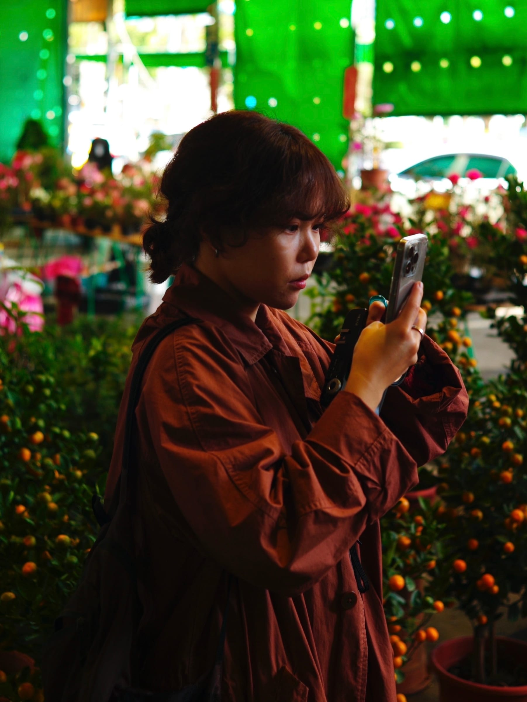

3Dowon
3Dowon (b. 1996, South Korea) is an interactive media artist who reimagines how people experience space by adding small changes to familiar objects. Starting from things easily encountered in everyday life — windows, books, sunlight, water, plants — he creates interactive environments that lead the audience to see familiar scenery anew through fresh senses.
Working with interactive installation and physical computing, he connects digital media with physical space through real-time graphics and sensor technology. In that process, the boundary between reality and the virtual naturally blurs, and the experience lingers on as a memory.
In 3Dowon's work, technology is not something to be shown off but a material for experience. Sensors operate quietly behind the scenes, helping the audience immerse themselves in the space and the experience itself rather than the technology. He leads people to slow their steps for a moment, trust the experience in front of them, and let everyday actions become reality within the work.
Recently, he has continued a practice of adding small changes to familiar objects and spaces, creating warm experiences that linger long in people's memory and senses.
Fields
- Interactive installation
- Physical computing
- Real-time graphics
- Sensor technology
